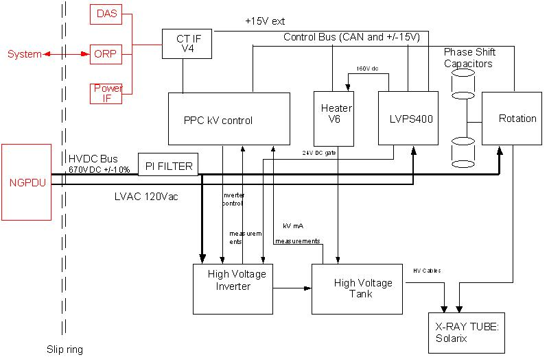

Operating Documentation
Direction 5181166-800, Rev# 7
BrightSpeed Select Service Methods Adv
Operating Documentation |
| Last Revised on: | March 20, 2007 |
Jedi is the engineering name for a family of compact high frequency X-Ray generators. This generators family covers a wide range of applications from the mobile equipments RAD/RF up to this state of the art CT system.
JEDI 12-25KW: Mobile applications
JEDI 24-42KW: CT applications
JEDI 32-50KW: RAD applications
JEDI 50-65-80KW: RF applications
JEDI 100KW: VASCULAR applications
JEDI HP 100KW: CT applications
JEDI 60DC-53.2KW: CT applications
JEDI 60DC Lite-42kW : CT application
Jedi 60DC Lite is a High Voltage Generator for CT applications based on Jedi Platform, capable of operating at a peak power of 42KW. This generator is very closed to Jedi 60DC product.
Family of 150kV generators operating from 12KW up to 100KW for all the major radiological, fluoroscopic and CT applications. The family handles 1ms to continuous exposures ranging from 0mA up to 1000mA
The generators feature the very latest technology available:
Constant potential independent of the line voltage variations
Power generation by a high-frequency converter (High voltage ripple: 40KHz-140KHz)
Distributed microprocessor controlled functions (CAN bus)
Single phase, three-phase or battery power source
Very low kV and mA ripple, excellent accuracies and dose reproducibility
Compatible with a wide range of tubes, high speed or low speed, supplies up to 3 different tubes. Thermal load interactive integrator ensuring optimum use of the heat protection curve of the x-ray tube
Declined in various packaging configurations: gantry, under-table, and cabinet
Serviceability: high reliability, fast installation ( no generator calibration ), application error codes reported ensure fast troubleshooting
Meets CE marking (and in particular EMC), IEC, UL, CSA, MHW regulations (if required)
Optional pulsed fluoroscopy
CT:
“CT” exposure mode, kV-mA- time
Variable mA scans
Refer to Jedi generator functional architecture bloc diagram;
Illustration 1: JEDI generator / JEDI 60DC Lite functional architecture

The Jedi family is composed of:
a kernel:
High voltage chain composed of kV control, HV power inverter and HV tank
Anode rotation function
Tube filaments heater function
Control bus for communication between the functions
DC bus for power distribution to each function
Low voltage power supply
Application software, running on the kV control board
These functions are the Jedi core. They are present in all versions of the generator.
options depending on the application:
System CT Interface (CT-IF-V4 board in case of Jedi60DC and Lite)
CT Mechanical interfaces
EMC function (Pi Filter board)
a packaging:
The packaging architecture consists in a set of boxes which can be put together in several ways to make it fit either in a cabinet or a console foot or a table foot. The boxes can also be split in 2 or 3 units distant of several meters (example: CT gantry). In case of Jedi 60DC Lite, the boxes are split in 2 units: Power Unit and Auxiliary Unit, including following modules:
Table 1:
| 1 | 2 |
| POWER | AUXILIARY |
| (1 box) | (1 box) |
| 1 “Power Unit” | “HP Auxiliaries” |
| - HV tank 1 tube | - Low Voltage Power Supply (400W) |
| - HV power inverter | - Heater function (SF/LF) |
| - KV control | - Rotation function |
| - System Interface | |
| - EMC Filter: Pi Filter | |
| - Mechanical interface (“Power Unit bracket”) |